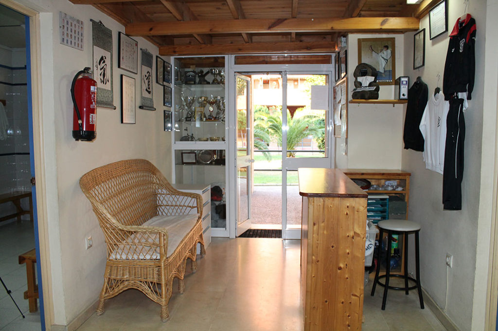

Artes marciales en Sevilla Este · Desde 1987
Donde el karate se vive como tradición.
Kidokan Dojo lleva más de 30 años formando artistas marciales en Sevilla. Karate, Kobudo, Jujutsu, Kenjutsu, Iaido y Defensa Personal: disciplina tradicional japonesa con aplicación real.
Descubre el Dojo


No enseñamos a pelear: enseñamos a conocerse. Treinta años de kata, combate y tradicion japonesa, con profesores que han entrenado en los dojos de Okinawa y Tokio.
años formando artistas marciales
sobre 5 en Google Maps
reseñas verificadas
disciplinas que puedes practicar
El camino del karate se dibuja paso a paso
Cada kata es una conversación con siglos de tradición marcial. En Kidokan practicamos el karate cómo se concibió en Okinawa: con sentido marcial, aplicación real y respeto por la forma.
El Dojo
Dentro de Kidokan


Ocho caminos,
un mismo dojo.
Tradición japonesa y sistemas de combate real
Karate
Arte de combate originario de Okinawa. Kata, kumite y bunkai con aplicación marcial real. Clases para niños y adultos con Sensei Juan Antonio García, C.N. 5.º Dan.
Kobudo
Armas tradicionales de Okinawa: bo, sai, tonfa y nunchaku. Estilo Matayoshi Kobudo, poco habitual fuera de Japón. Complemento natural del karate.
Jujutsu tradicional
El arte de los samurais sin armas: luxaciones, proyecciones, inmovilizaciones y atemi. Nihon Jujutsu con Sensei Mario Ferrer, C.N. 2.º Dan.
Kenjutsu y Gekiken
Esgrima japonesa con katana de madera (bokken) y combate con protecciones. El arte del sable con sentido marcial aplicado.
Iaido
El arte de desenvainar y cortar en un solo movimiento. Practica meditativa con katana (iaito) que desarrolla concentración y precisión.
Silat Suffian Bela Diri
Sistema de combate del sudeste asiatico. Trabajo de maños, armas cortas y control del espacio. Eficiente y directo.
Defensa Personal Femenina
Programa especifico para mujeres. Técnicas reales de defensa adaptadas a situaciones cotidianas, con enfoque practico y progresivo.
Chikung
Gimnasia energética china para la salud. Movimientos suaves, respiración consciente y meditación en movimiento. Abierto a todas las edades.

Fundado en 1987. Más de 30 cinturones negros formados.
Lo que dicen quienes
pisan nuestro tatami.
4,9 ★★★★★ 29 reseñas
"Profesionalidad y dedicacion maxima. Sin duda un gimnasio a destacar, tanto en lo profesional cómo en lo personal."
"Gran ambiente el que existe en el Dojo. Admirable la profesionalidad de sus maestros."
"Magnificos profesionales y con grandes resultados. Todo un placer compartir tatami."
Horario semanal
| Lunes | 17:00 a 21:00 |
|---|---|
| Martes | 17:00 a 22:00 |
| Miércoles | 17:00 a 21:00 |
| Jueves | 17:00 a 22:00 |
| Viernes | 17:00 a 21:00 |
| Sábado | 09:00 a 13:00 |
| Domingo | Cerrado |
Clase de prueba disponible
Ven a conocer
Kidokan.
Escribir por WhatsApp
O llama directamente al 666 16 47 46
Dirección
C/ Cueva de Menga, 1
Local 7 · 41020 Sevilla Este